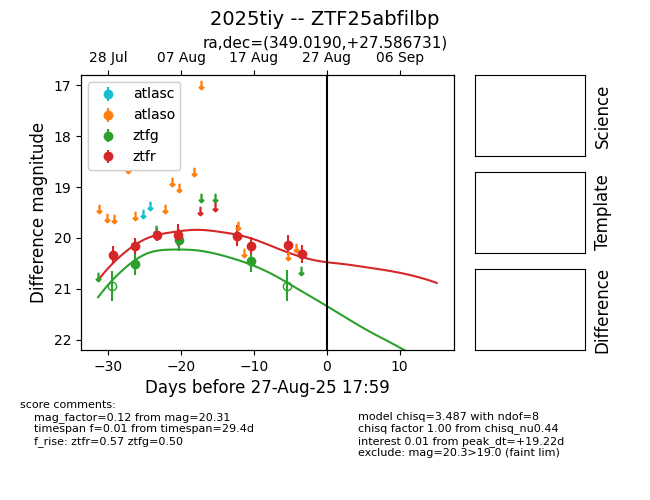

Target 2025tiy at 2025-08-21 09:16, see:
FINK: fink-portal.org/ZTF25abfilbp
Lasair: lasair-ztf.lsst.ac.uk/objects/ZTF25abfilbp
ALeRCE: alerce.online/object/ZTF25abfilbp
TNS: wis-tns.org/object/2025tiy
YSE: ziggy.ucolick.org/yse/transient_detail/2025tiy
alt names
ZTF25abfilbp (ztf,alerce)
2025tiy (tns,yse)
coordinates:
equatorial (ra, dec) = (349.0190,+27.58678)
galactic (l, b) = (98.3137,-30.68635)
photometry
last ztfg=20.44, ztfr=20.15
5 ztfg, 7 ztfr detections
